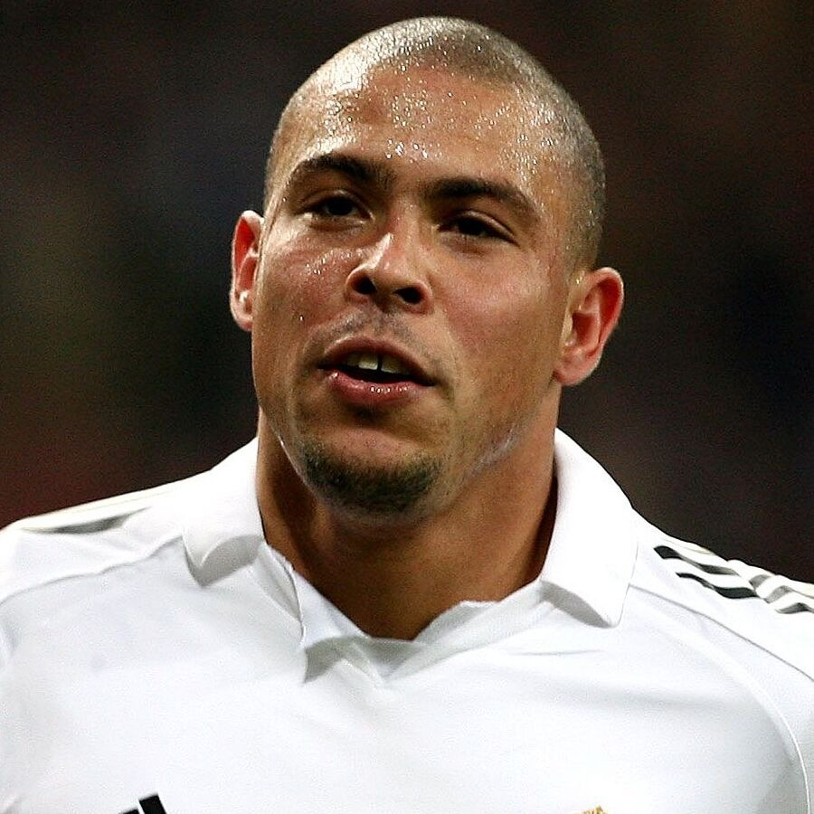
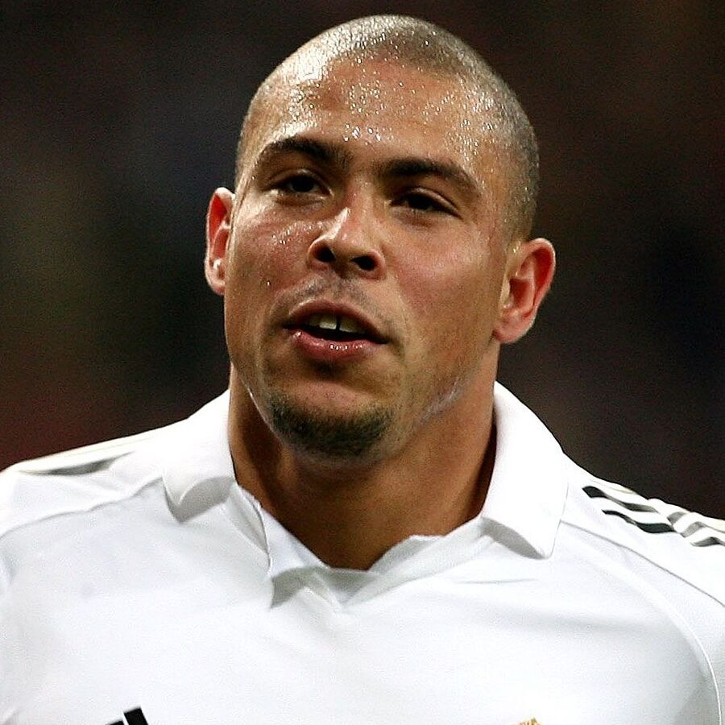
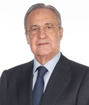
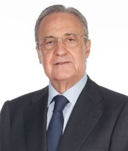

A Era Di Stéfano (1950-1960)
Uma década marcante com a chegada do ícone argentino Alfredo Di Stéfano em 1953. O clube conquistou uma impressionante sequência de cinco títulos consecutivos da Liga dos Campeões da UEFA entre 1956 e 1960.

Galáticos e Dominação Europeia (2000s)
Nomes como Zinedine Zidane, Ronaldo Nazário, e David Beckham tornaram-se sinónimos de uma era de sucesso. Sob o comando de treinadores como Vicente del Bosque e Carlo Ancelotti, o clube conquistou múltiplos títulos da La Liga e da Liga dos Campeões , solidificando sua posição como uma força dominante no futebol mundial.

 



 
